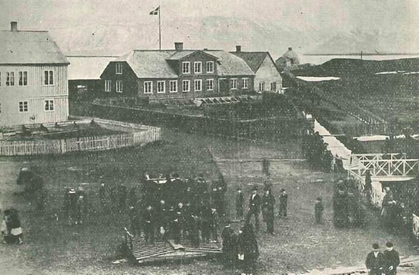
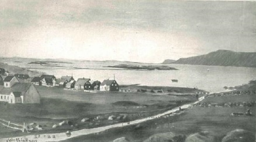
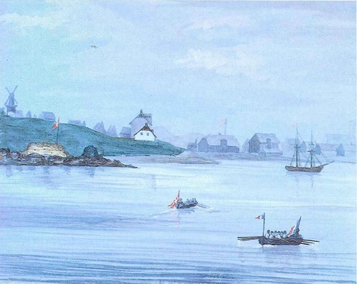
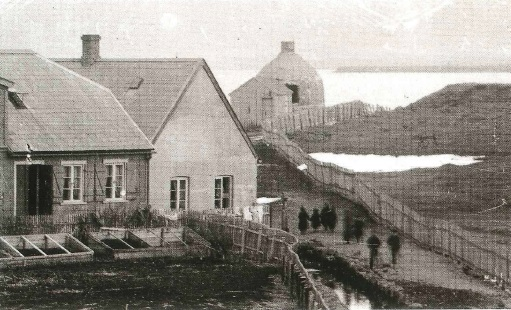
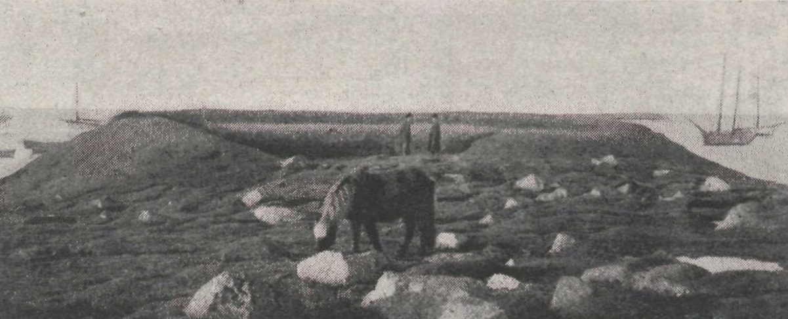
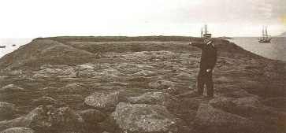

Kort af Reykjavík frá árinu 1787. Álitið er að búið hafi verið á Arnarhóli nánast frá
landnámi. Sú ályktun hefur m.a. verið dregin af þykkum mannvistarlögum, sem eru á stórum
hluta hólsins, að fljótlega eftir að Ísland byggðist hafi myndast þar byggð. Elsta byggðin
mun vera frá því fyrir árið 1226 því hún er eldri en gjóska sem þá féll. Aðalleiðir til
Reykjavíkur um aldir lágu um svonefndar Arnarhólstraðir í landi Arnarhóls og sjá má
traðirnar á kortinu. Stiftamtmaður lét rífa bæjarhúsin árið 1828, sem þá voru orðin mjög
léleg. Bærinn stóð þar sem styttan af Ingólfi Arnarsyni er nú og er þar ágætt dæmi um
bæjarhól sem hlaðist hefur upp í gegnum aldirnar.
Málverk Jóns Helgasonar biskups af Reykjavík eins og hann sá fyrir sér bæinn árið 1787.
Myndin byggir trúlega á kortinu að ofan og fleiri heimildum. Elsta varðveitta heimildin
um Arnarhól er frá 16. öld, þar sem segir að Arnarhólsjörðin hafi verið í eigu Hrafns
Guðmundssonar bónda í Engey. Árið 1534 gaf Hrafn jörðina Viðeyjarklaustri með gjafabréfi.
Þegar kaupstaður var stofnaður í Reykjavík árið 1786 og uppmæling fór fram á
kaupstaðarlóðinni árið eftir kom fram að Arnarhóll skyldi lagður til kaupstaðarlóðarinnar,
en það fórst fyrir. Arnarhóll hefur tilheyrt Reykjavík frá 1835 þegar bæjarlandið var
stækkað.
Málverk Aage Nielsen frá um 1960 af stiftamtmannshúsinu nálægt 1820, sem fáum árum áður
var tugthús, og næsta umhverfi. Í bakgrunni má sjá torfbæinn Arnarhól, sem rifinn var
1828, og einnig Arnarhólstraðir sem voru þjóðleiðin til Reykjavíkur um aldir. Myndin er
lífleg og skemmtileg en taka verður hana með fyrirvara. Athygli vekur hversu fjallgarðurinn
í kringum Reykjavík er fjarri raunveruleikanum.

Ljósmynd tekin frá Lækjartorgi trúlega nálægt 1890. Hægra megin sést í Batteríið á
Arnarhólstúni en Arnarhólskot, sem var hjáleiga frá Arnarhóli, stóð þar nálægt,
nokkurn veginn þar sem hús Seðlabankans er nú.

Málverk Jóns Helgasonar eins og hann sá fyrir sér Reykjavík um 1790, en myndin er máluð
um öld síðar. Hún sýnir Arnarhólslæk, eða Lækinn eins og hann var oftast nefndur.
Einnig má sjá Arnarhólstraðir.

Málverk af Reykjavík frá um 1850. Batteríið, þar sem Íslendingar hafa komist næst því
að koma upp virki, sést vinstra megin á myndinni en þar stóð áður Arnarhólskot sem var
hjáleiga frá Arnarhóli.

Ljósmynd af kalkofninum sem reistur var nokkurn veginn þar sem Batteríið stóð.
Verulegar landfyllingar hafa komið til síðan, en Seðlabankinn er í dag þar sem
Batteríið stóð áður.

Ljósmynd frá 1907 af Batteríinu eða Jörundarvígi eins og það var stundum nefnt.

Ljósmynd af Batteríinu um eða rétt eftir 1900. Júlíus Havsteen amtmaður bendir á
staðinn.
Ljósmynd Sigfúsar Eymundssonar frá 1882 tekin frá Arnarhóli. Arnarhólstúnið tilheyrði
stiftamtmanni, sem kom í veg fyrir að Alþingishúsið yrði reist þar eins og til stóð.
Hann taldi slíkt eflaust spilla túninu fyrir sér. Hægra megin við Alþingishúsið má með
lagni sjá torfbæinn Hólakot.